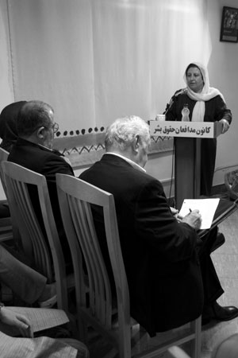
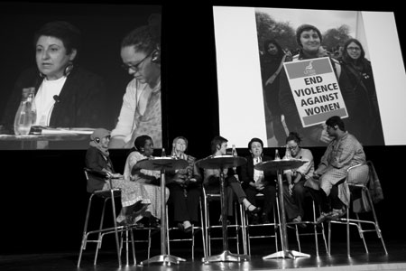

پذيرش > اخبار > این بار دفاعیه موکلان برای وکلایشان


 این بار دفاعیه موکلان برای وکلایشان این بار دفاعیه موکلان برای وکلایشان
1 بهمن 1387 - - نسخه قابل چاپ
تغییر برای برابری - شیرین عبادی و فعالیت کانون مدافعان حقوق بشر را نه به بهانه و نه با پلمب نمی توان از حرکت بازایستاند. تصویرو تاثیری که این مدافعان حقوق بشر از خود به جای نهاده اند آنقدر ژرف و نهادینه شده است که قفل و زنجیرو مهر وموم ...دربرابر آن ناچیز است. کدامیک از این ممنوعیت ها می توانند صدای صلح طلبانه عبادی را فرونشاند، یا نقش کانون مدافعان و وکلای آن را در آموزش حقوق متهمان و شهروندی و زن و... دفاع از حقوق متهمان و شهروندان و قومیت ها و اقلیت ها و...از حافظه بزداید؟ کانون مدافعان و ریاست آن را از منظر موکلان و مدافعانش ببینید: 18 نوشته و روایت در باب مدافعان حقوق مان
1-مریم مالک
من هم روزی مثل آن زن خواهم شد
دختر بزرگ می شود در تنهایی و در خانه ای که مردسالاری در آن حاکم بود. یادش می آید زمانی که کودکی بیش نبود به دستانش لاک قرمز رنگِ قشنگی زد و وقتی به پدر دستانش را نشان داد تا تحسین کند پدر عصبانی شد و گفت برو زود ناخن هایت را پاک کن و از این به بعد بدون اجازه من کاری انجام نده. دخترفکر می کرد چون دردانه پدر است با او این طور حرف می زند! اما ...
محصور ماند و محدود، در حصاری که برایش می ساختند دیگر از دوچرخه سواری خبری نبود، دیگر نمی توانست به کوچه بیاید و بازی کند ولی نمی دانست چرا از عروسک بازی خوشش نمی آمد؟ هیچ وقت با دختران همسایه خاله بازی نمی کرد و وقتی به پسران می گفت که می خواهد با آنها فوتبال بازی کند به او می خندیدند و می گفتند برو تو نمی توانی؟ پر شور بود و فعال اما باید در خانه می ماند و بس، وقتی بزرگ تر شد دید که نمی تواند زور بشنود و هر چه به او می گویند بگوید چشم. بلند شد و ایستاد، با تمام سعی و تلاشی که کرد بالاخره توانست از حصار خانه بیرون بیاید و پایش را به دانشگاه بگذارد جایی که به نظر پدر ورود به آن برای دختران حرام بود.
وای چه دنیای بزرگ و اسرار آمیزی داریم؟ زنان به سرکار هم می روند؟ زنان وکیل هم هستند؟ استاد هم می شوند؟ زنان وجود دارند و هستند؟ دختر تا آن زمانی که پا به دانشگاه نگذاشته بود فکر می کرد زن فقط باید شوهر کند و بچه دار شود و هر چه مرد گفت همان تمام حقایق عالم هست. به قول یکی از دوستانش که می گفت شوهرش به او گفته حتی اگر مرد راضی نباشد زن نمی تواند نمازش را بخواند؟!
از آن روز دختر هر روز که به خانه می رفت از افتخارات زنان در خانه حرف می زد و می گفت من هم روزی مثل آن زن خواهم شد. من هم باید به زنان جامعه ام کمک کنم، پدرش می گفت: " از همان اول نباید می گذاشتم به دانشگاه بروی، چشم و گوشت خیلی باز شده مثل آن زن شوی؟ همان که عکسش را نشانم دادی؟ حتما هم بدون روسری؟"
دخترچشمانش را می بست و با تمام وجود می گفت: "پدر آن چیزی را که من می دانم و می بینم تو نمی دانی و نمی بینی؟ آن زن تنها یک وکیل نیست آن زن افتخار من است، آن زن آرزوی دخترانی مثل من هست، آن زن به همه ثابت کرد که زن بودن در ایران، ماندن در حصار خانه هایی نیست که مردان برای ما ساخته اند، آن زن به همه فهماند که زن ایرانی وجود دارد و هست، من باید بتوانم مثل او شوم و من می توانم حتی اگر تو نخواهی پدر."
اما امروز آن دختر به این می اندیشد که آیا تو می توانی مانند آن زن این همه هزینه بدهی؟ اگر یک روز مأمورها به تو هجوم بیاورند چه می کنی؟ اگر یک روزعده ای جلوی خانه ات جمع شوند و آزارت دهند تو چه خواهی کرد؟ تو برای اینکه باعث افتخار شوی باید هزینه بپردازی، برای اینکه ذره ای مانند شیرین عبادی شوی باید قوی باشی، زن بودن با افتخار برایت کافی نیست، تو باید شجاع و مقاوم باشی، صبور و فداکار باشی. اشکها و قلب شکسته ات را از آن دختری که از تو برای خود کوهی از آمال و آرزوهایش را ساخته پنهان کنی، تو باید هر بار که دختری را با چشم های پر از انگیزه و امید می بینی با تمام وجودت دستش را بفشاری.
بی نظیری تنهاحسن او نیست، و برای شناخت چون او، باید زمانه شان را شناخت، اما آیا این جملات به تنهائی کافی بود؟
2-كاوه قاسمی كرمانشاهی
رد مرگ بر ديوارهای شهر
آنگاه كه تازه سواد خواندن حروف و چسباندنشان به يكديگر برای ساختن كلمه و پرداختن جمله را فرا گرفته بودم از كوچه و خيابانهای شهر كه میگذشتم چشمانم در جستجوی واژهها و جملهها در و ديوارهای شهر را میكاويدند. نخست به توصيهی مادرم كه میخواست سواد نوآموختهاش را محك زند و سپس با كنجكاوی خودم كه در پی يادگيری واژهای نو بودم. آن زمان نشانی از بيلبوردهای تبليغاتی در خيابانهای شهر تازه از جنگ رستهی من يافت نمیشد و نصب تابلوهای بزرگ بر سردر پاساژها و مغازها هم چون امروز چنان باب نبود. اما تا چشم كار میكرد ديوارها پر بودند از عبارات و شعارهای نوشته شده با اسپریهای سياه رنگ كه با خطوطی كج و معوج چهره اين شهر ويران گشته از جنگ را نازيباتر و خشنتر به تصوير میكشيدند.
در آن زمان "مرگ" و "جنگ" بيشترين و پررنگترين واژههایی بودند كه بر ديوارهای كوچه و خيابان به چشم میآمدند و در ذهن عابر خواننده جای میگرفتند. در گذر از كوچه، پس كوچهها به تكرار شعار "مرگ بر ..." خودنمايی میكرد. گاهی كسانی در تاريكی شب میآمدند، آن سه نقطه را پاك میكردند و عنوانی ديگر در تضاد با آنچه بود بر جايش مینشاندند، اما آن واژه كه هميشه باقی میماند "مرگ" بود. به خيابانها كه میرسيدی در قالب عباراتی بلندتر و رسمیتر اينبار "مرگ" در كنار "جنگ" مینشست و مزين به نقش گل لاله و تفنگ بر سطح ديوارهای شهر نقش میبست. هرچند به اينجا كه میرسيد به رنگ سرخ و سبز زير عناوين "شهادت" و "دفاع مقدس" توجيه میگشت و ارزش میيافت.
در عبور از آن سالها شعارنويسی نزد مخالفان كارآيی خود را از دست داد و حاكميت نيز بنرها و بيلبوردها را جايگزين دیوارنوشتهها نمود. اگر چه هنوز هم "مرگ" جايگاه ويژه خود را در اين ميان حفظ كرده است. اما ديگر با اسپری نوشتن بر ديوارهایی كه شهرداری با هزينه كردن از ماليات دريافتی از شهروندان سعی در پاك نمودن و پاكيزه نگاه داشتن آنها دارد نه تنها از مد افتاده كه حتی انجام اين عمل با توجه به نصب تابلوهای هشدار دهنده بر ديوارهای شهر میتواند پيگرد قانونی نيز داشته باشد. چه رسد به آنكه عدهای هياهو كنان روز روشن و در حضور مأموران انتظامی از ديوارهای خانهای آويزان شوند و اقدام به شعارنويسی كنند!
امروز كه ديدگانم را از آن ديوارهای دوران كودكی بر میگردانم و از پشت مانيتور به عكسهای ديوار محل زندگی و دفتر كار شيرين عبادی خيره میسازم باز هم شعار "مرگ" را میبينم كه با همان اسپری سياه رنگ و خطوط نازيبا اينبار بر ديوار آجرنمای خانهای نقش بسته كه زنی بيزار از "مرگ" و "جنگ" را در خود جای داده است. زنی كه اين روزها نامش با مدافعان حقوق بشر و شورای صلح چنان گره خورده كه سخن راندن از اين دو بدون آوردن نام وی به گوش مخاطب ناآشنا میآيد و ذكر نامش در برخورد با شهروندان هنگام جمع آوری امضاء برای كمپين تغيير برای برابری اعتبار میآورد و جلب اعتماد میكند.
"ننگ" شعار واژه ديگریست كه در كنار "مرگ" خطاب به صاحب اين خانه بر ديوارها حك شده است. عجبا! صد عجبا! چه كسی بايد ننگش بیآيد؟! زنی كه با دريافت معتبرترين جايزه بينالمللی به واسطهی كوششهای حقوق بشریاش برای خود و ما افتخاری پايدار آفريد؟! زنی كه آبرويی گشت بر بیآبرويی دولتمردانی كه در پايانههای جهانی در صف انگشت نگاری جایمان دادند؟! زنی كه نامش اعتباری شد بر بیاعتباری دولتمردانی كه نامشان در ليست افراد تحت تعقيب اينترپل قرار گرفت؟! زنی كه حضور شايستهاش در مجامع بينالمللی جبرانی هر چند اندك گرديد بر حضور پرهياهوی دولتمردانی كه با كلامشان موجبات خنده حاضران و هو كردن خودشان را فراهم آوردند؟!
آری هنوز رد "مرگ" بر ديوارهای شهر پيداست... و باشد كه اينبار تا مدتی بر سطح اين ديوارها باقی بماند تا ذهن عابران كوچهی عبادی را حتی برای لحظهای درگير سازد و شايد كودكی نوآموخته در گذر از اين كوچه واژه "مرگ" را ببيند و بخواند و در پرسش از مادرش در يافتن معنی اين واژه و دليل نوشتن آن بر ديوار اين خانه اما معنا و تعبيری متفاوت از قصد نويسندگان اين خطوط نازيبا در ذهنش جای گيرد.
3- مریم زندی
کانون مدافعان، این تریبون حق خواهی خاموش نمی شود
گزارش سالانه آن باعث شد جهانیان و ملت ایران متوجه شوند درایران در چه موارد کثیری نقض حقوق بشر صورت می گیرد. تاثیرات این گزارش می تواند سد کنترل کننده ای برای حکومت ایران باشد. خانم شیرین عبادی به خاطر موقعیت بین المللی شان، اعتراضا ت ، مصاحبه ها و سخنرانی هایشان همیشه مورد توجه منابع داخلی و خارجی بوده. صدای ایشان دردفاع از حقوق بشر موثر بوده و خواهد بود.
مجموعه فعالیت کانون مدافعان حقوق بشر درنهادینه کردن و اهمیت حقوق بشر درجامعه موثر و تشویق کننده بوده وهست. و می تواند بقیه فعالین و افراد راهم تشویق به چنین فعالیت بنماید. همینطور برگزاری کارگاه های حقوق متهم و شهروندی در شناساندن قانون به مردم خیلی موثر می باشد. مهم تر از همه کانون مرکز پشتیبانی ازافراد و جمعیت ها و احزابی است که حقوقشان تضیع و پایمال شده مثلا: مراجعه دانشجویان ستاره دار که باعث تشکیل کانون دفاع از حق تحصیل گردید. یا انعکاس صدای خانواده های قربانیان زهرا بنی یعقوب و ابراهیمی .
درحقیقت کانون برای جسارت بخشیدن به مردمی است که با اشکال غیر قانونی حقوقشان زیر پا گذاشته شده است.تعداد محدود وکلای عضوکانون مدافعان و انتشار دیدگاهایشان خیلی بیشتر از آن تعدادمعدود اثر گذار خواهد بود. و این ارزش واهمیت یک کار متعهدانه و انسانی را نشان می داد و الگوی برجسته ای بود برای بقیه وکلا و فعالینی که کمتر در اثر فشارهای حکومت دغدغه آزادی ودمکراسی ازخودشان بروز می دادند.
بسته شدن کانون مدافعان خاموش شدن تریبونی موثر در جامعه مدنی ایران است و هر کس در داخل وخارج از کشور باید از هیچ فعالیتی در بازگشایی آن دریغ نکند بخصوص در خارج درمقابل دفتر نمایندگی های سازمان ملل و سفارت خانه ها ونمایندگی های جمهوری اسلامی اقدام مناسب وموثری می تواند باشد.
به خصوص در شرایطی که درداخل کشور تجمعات و گردهمایی های اعتراضی به دلیل خفقان وسرکوب امکان عملی کمتری دارد.
باید با یک فراخوان عمومی همه را از اهمیت چنین اعتراضی آگاه کرد.
بی شک نام کانون مدافعان و اعضای آن در تاریخ مبارزات دمکراسی خواهانه ایرانیان به نیکی ثبت خواهد شد.
نگذاریم این صدای حق خواهی خاموشی گیرد.
4-بهاره هدایت
نقطه ی درخشان کارنامه ی کانون مدافعان
واقعیت این است که فعالیت های خانم عبادی، بعد از اخذ جایزه ی نوبل را می توان نقطه ی عطف فعالیت های حقوق بشری در ایران تلقی کرد. با وجود اینکه دریافت جایزه ی صلح نوبل نه از طرف حاکمیت و نه حتی از جانب دولت اصلاح طلب وقت ، مورد استقبال قرار نگرفت و دامنه ی فشارها به خانم عبادی روز به روز گسترده تر می شد، اما خوشبختانه تا به امروز ممارست ایشان در پیگیری امور حقوق بشری بی وفقه ادامه داشته است.
تأسیس کانون مدافعان حقوق بشر و گسترش فعالیت های آن نمونه ی بارزی از آینده نگری و هدفمندی نگرش خانم عبادی است که در راستای ایجاد اندکی انسجام در فعالیت های حقوق بشری داخل کشور انجام شد و ثمره ی آن را امروز در این نهاد مدنی موفق شاهدیم. اینکه کانون مدافعان توانسته است معتمد طیف های مختلف فعال در عرصه های اجتماعی، سیاسی، دانشجویی، زنان، کارگری، قومیتی و اقلیت ها قرار بگیرد، و بی هیچ چشمداشتی، به دفاع حقوقی از آسیب دیدگان نقض حقوق بشر، در دادگاه، بپردازد، نقطه ی درخشان کارنامه ی کانون مدافعان و ماحصل زحمات خانم عبادی و همکارانشان است. موضوعی که از جانب نهادهای حکومتی ناقض حقوق بشر قابل چشم پوشی نیست، و می بینیم که میزان فشارها را تا چه حد روی ایشان و کانون مدافعان افزایش می دهند.
موضوع دیگری که خشم حاکمان را برانگیخته، گزارش های فصلی کانون مدافعان درباره ی موارد نقض حقوق بشر در کشور است، که دقت این گزارشات موجب شده مورد توجه و استناد مجامع بین المللی قرار بگیرد و موارد مشخص نقض حقوق بشر توسط حکومت ایران در سطح جهانی روشن شود. این موضوع هم از اهمیت بالایی برخوردار است. چرا که تا پیش از این نوع ارتباط با نهادهای بین الملی و استفاده ی مطلوب از فضای دهکده ی جهانی چندان روشن نبود، و حتی چندان مورد توجه قرار نمی گرفت، در حالیکه آرمان حقوق بشر یک آرمان جهانی است و ما می توانیم و باید صدای خود را به دنیا برسانیم، و با مدافعان حقوق بشر در دنیا از طریق نهادهای موجود مرتبط باشیم. روشی که چگونگی آن را خانم عبادی با استفاده از نفوذ خود به بهترین وجه ممکن عملی کرده است و تجربه ی بسیار مطلوبی را خصوصا در ارتباط با "کمپین یک میلیون امضا" به جا گذاشته است.
متأسفانه از ابتدای دریافت جایزه ی صلح نوبل، خانم عبادی در معرض انواع و اقسام تهدیدات جانی و تحدیدات حقوقی قرار گرفته است و این موضوع بارها مورد اعتراض نهادها و فعالین مدنی بوده. اما این بار پلمپ کانون مدافعان به بهانه های واهی و یورش به منزل خانم عبادی، آغاز موج جدید در هجمه و تهدید علیه ایشان است. پس از محکومیت ایران در اجلاس اخیر در سازمان ملل و صدور بیانیه ی قاطع علیه ایران به لحاظ نقض حقوق بشر، خشم حاکمان از مورد استناد قرار گرفتن گزارشات کانون مدافعان در این بیانیه قابل پیش بینی بود. خشمی که موجب سیل تهدیدات حاکمان یا عاملان آنها علیه عبادی شده است و هنوز هم جای نگرانی است که باز هم با گستاخی بخواهند باعث آسیب دیگری به ایشان شوند.
جدا از این، با توجه به شرایط بوجود آمده برای خانم عبادی و کانون مدافعان، آینده ی فعالیت های حقوق بشری در کشور با شدت بیشتری مورد تهدید قرار خواهد گرفت. چراکه همانطور که خانم عبادی نقطه ی عطفی در فعالیت های حقوق بشری ایجاد کرد، هرگونه هجوم به ایشان به نوعی معطوف به کل جریان حقوق بشری در کشور باید قلمداد شود. بنابراین دور از ذهن نیست که در آینده شاهد همین نوع هجمه ها به نهادهای مختلف دانشجویی، زنان، کارگران، اصناف، اقلیت ها و قومیت ها باشیم، و فضای تنفس کوشندگان حقوق بشر در ایران بیش از گذشته تنگ شود.
5-حمیده نظامی
زن صلح طلب ما
كودك كه بوديم با صداي آژير خطر صبحها را به شب و شبها را به صبح ميرسانديم. با صداي آژير خطر كلاسهاي درس را به قصد پناهگاهي رها ميكرديم. با صداي آژير خطر آمبولانسهاي مجروحين جنگ را همراهي كرديم و با همان صدا در بين مجروحين، بدنبال برادران و پدران خود گشتيم...
با صداي آژير خطر...
هر بار دلهره داشتيم از اين صداي آژير خطر و ترس ما از خشونت بود هر بار.اما اين بار، این یک بار احساس كودكانهي ما ميگفت تمام شد همه آن روزهاي شوم، اين بار منادي صلح است كه مينوازد. اما باز با صداي آژير خطر نه يك بار بلكه بارها به خود لرزيديم. اين بار آژير خطر براي نفي مناديان صلح به صدا درآمد.
ترس ما از اين صدا بيشتر از پيش بود چراكه تصور پاك كودكانهمان خطا بود؛ اين بار صداي آژير خطر از همه وقت بدخبرتر و بدخبرتر بود.
باز هم خشونت، خشونت ، خشونت اما اين بار نه از سوي بيگانه...
نمي توانيم به هموطنان رنجديده مان ياري رسانيم. حتي نمي توانيم تجمع مسالمت آميزي در نفي خشونت داشته باشيم و نمي توانيم حتي براي لحظهاي همراه با صلح خواهان جهان، همنوا شويم و...
شيرين عبادي برنده جايزه صلح نوبل را اول به بهانه پرداخت نكردن ماليات و بعد همكاري با اسرائيل هتك حرمت كردند! زن صلح طلب ما را!
6-بهناز شکاریار
او تا آخر با ماست
روزی از روزهای پاییز سال گذشته بود که پروین اردلان با من تماس گرفت و آدرسی را داد و خواست به جلسه ای که آن جا برگزار می شد بروم . نشانی دفتر وکالت شیرین عبادی بود. همیشه از دیدن عکس او درسایت زنان صلح در کنار زنان نامی جهان لذت می بردم و افتخار می کردم که یک زن ایرانی در این جمع ، که منتخبی از زنان جهانند، حضور دارد.
ولی دیدن او از نزدیک چیز دیگری بود . مرتب در حال حرکت برای پذیرایی و یا پاسخ به تلفن بود و فوق العاده متواضع . تمام مشکلاتی که آن روز مطرح شد گویا برایش پیش پا افتاده بود و مشکلی به حساب نمی آمد. خیلی صریح ومطمئن پاسخ میداد و در تمام دو ساعت حضورمان در دفترش شاهد دغدغه هایش در مورد زندگی زنان و کودکان محروم و مظلوم بودیم .
بعدها بارها شیرین عبادی را در برنامه های مختلف کمپین دیدار کردم وگاه مشکلات اقلیت ها و مردم را با او در میان گذاشتم که بلافاصله می شنیدم که برای رفع آن مشکلات اقداماتی انجام داده است .
ولی در آن روز نخست سخنی گفت که هیچگاه از خاطر نخواهم برد .
او گفت : هر اتفاقی که بیفتد برای همۀ ما میفتد و ما تا آخر با هم هستیم .
او پای حرفش ایستاده و حتی یک لحظه هم پشت زنان ایرانی را خالی نکرده است. جرات و شجاعت او مثال زدنی است؛ همین طور صبرو طاقتش به عنوان زنی حقوقدان. شاید اگر کس دیگری جای او بود اینک در یک کشور پیشرفته زندگی مرفه و امنی برای خود تدارک دیده و به همین اکتفا می کرد که گاه گداری در یک نشریه و یا یک تلویزیون فارسی زبان از تجربیاتش سخن گوید و از دور راه چاره جلوی پای ما بگذارد، ولی او این چنین نیست تمام تهمت ها و توهین ها را به خاطر ما تحمل کرده و در کنار ما است . او تا آخر با ما است. ما نیز تا آخر با او می مانیم.
7- دلارام علی
زنی را می شناسم که از جنس ماست
تند رفته ای برادر ، دیروز برای ما خواب دستبند و مامور و زندان می دیدی و امروز چشم در چشم های بهت زده همه هجوم می بری به دفتر کانون مدافعلان حقوق بشر تا ثابت کنی ما در سرزمینی زندگی می کنیم که پاسدارانش حرمت همه چیز را خوب از یاد برده اند.
رنگ عوض می کنی هر روز ، یک روز پلیس می شوی و به خیابان می ریزی و مردم را زیر مشت و لگد می گیری و فردا مامور مالیات می شوی تا به حساب هایی رسید گی کنی که طرفینش بسیار پیشتر از این ها قراردادهای مالی را در گنجه ها نهاده اند و برای زندگی در جهانی بهتر پا به میدان گذاشته اند.
می گویند حتی به دفترچه های تلفن هم رحم نکرده ای برادر ، تا شاید رمز گشایی کند از رمز و رازهایی که تنها زاییده ذهن توست.
برگرد برادر ، برگرد و به پشت سر نگاه کن و ببین آنچه می کاری در هیچ فصلی از سال حاصلی نخواهد داد. گیرم که تمامی دفتر های حقوقی و حقوق بشری را پلمپ کردی، گیرم بر تمام دیوارهای شهر شعارهای «مرگ بر...» نوشتی، گیرم امروز برای زنی که دیروز برنده جایزه صلح بود با کاردهای بر آمده خواب جنگ دیدی ، فکر می کنی دنیا برای این آدم ها چه تغییری می کند؟ فکر می کنی فردا همه به پستوها بر می گردند و کودکی که بامداد فردا یا فردا ها در انتظار اعدام است از وحشت طناب دار گلویش خشک می شود و کسی نیست که جرعه آبی به دستش دهد و کابوس مرگ را از زندگیش پاک کند؟و آن وقت تو پیروز میدانی هستی که برای خویش بر پا کرده ای؟
اشتباه کردی برادر، کسی پیام صلح را با اسپری جنگ روی دیوار نمی نویسد،کسی را که برنده جایزه صلح است با آشوب های پی در پی به جنگ فرا نمی خواند ، کسی مدافعان حقوق بشر را از خانه ای که برای خویش ساخته اند بیرون نمی کند تا یاد آوری کند که هنوز هستند کسانی که نه بشر را می شناسند و نه حقوقش را. اندکی تامل کن، آنها که پیش از تو مرگ را در روزگار مردم این سرزمین هجی کرده اند ، حالا کجای جهان ایستاده اند؟
برادر من زنی را می شناسم که انسانیت را با پول معامله نمی کند ، زنی که مامور و دستبند و زندان برایش عادی نمی شود و هر بار دلش می شکند از دست های بسته ای که بی گناه پشت میله ها محبوس می شود ، من زنی را می شناسم که حساب های مالیش را جایی بین پرونده های وکالت و دفترچه های تلفن جا نگذاشته است ، زنی که روزی برخاسته است و هرگز دیگر باز نخواهد نشست ، زنی که از جنس ماست و شاید از همین روست که تو نمی شناسیش. به خاطراتت رجوع کن برادر ، به ماشین هایی که از میدان آزادی تا فرودگاه مهر آباد صف کشیده بودند ، به گل هایی که دسته دسته و شاخه شاخه نثار زنی می شدند. می بینی چه زود فراموش کرده ای! لختی درنگ کن برادر، فصل پایان این قصه نه کابوس ما که ننگی از آن تو خواهد بود ، لختی درنگ کن .
8-رها عسگری زاده
عکسی از دیوار خانه شما ندارم
بحث لایحه حمایت از خانواده داغ است و هر شخص و یا گروهی به روش خود سعی در اعلام مخالفت و نقد و بررسی آن را دارد. چهره های متفاوتی از فعالان اجتماعی و سیاسی در دفتر کانون مدافعان حقوق بشر گرد هم آمده اند تا نظرشان را درباره این لایحه به اشتراک بگذارند.
شیرین عبادی با همان صلابت همیشگی می گوید :نمایندگان ، مردم رای شما به لایحه حمایت از خانواده را فراموش نخواهند کرد

کنار بچه ها ایستاده ام و بروشورها را مرتب می کنم. دختر جوان با عجله خودش را به ما می رساند و می پرسد : دکتر عبادی با شماست ؟
لبخند می زنم و قبل از آنکه پاسخی بدهم ادامه می دهد : واقعا زن شگفت انگیزیه .خیلی هیجان زده شدم وقتی شنیدم اینجاست. برنامه ای هم داره ؟
 بله . پنلی که فردا صبح در سالن اصلی برگزار می شه ... بله . پنلی که فردا صبح در سالن اصلی برگزار می شه ...
دختر را دیروز دیده ام . مسئول امور بین الملل کمپین یک در نه ( آفریقای جنوبی ) است . همان طور که با عجله آمده خداحافظی می کند و می گوید می رود که به دوستانش بگوید برای فردا صبح برنامه اش پر است.

تصویری ندارم. قرار بود تصویر آخر این چند پاره عکسی باشد از دیوارهای منزل مسکونی خانم عبادی. همان دیوارهایی که گروهی به بهانه حمایت نکردن خانم عبادی از مردم غزه با غلط دیکته ای رویش نوشته اند : اجوزه امریکایی! ننگت باد!
خانم عبادی عزیز ! عکسی که از دیوارهای خانه شما گرفتم هم دست برادران است. وقتی چند روزقبل به بهانه حمایت از غزه به ما حمله کردند دوربینم و عکسهایش را از من گرفتند. شاید روزی ...کسی که مسئول بررسی عکس های دوربین من است لحظه ای تامل کند ، عکس دیوار خانه شما را ببیند ، و کمی شرمگین شود.
9-محبوبه کرمی
خاطره هایی که از یاد نمی روند
دوباره حوادث ناگوارپشت سر هم پیش می آید یک روز می شنویم که دفتر کانون مدافعان حقوق بشر پلمپ می شود روز دیگر می شنویم که عده ای به نام بسیجی به جلوی منزل خانم عبادی رفته وبا شعارهای ناپسند دل هر ایرانی با وجدانی را به درد می آورد .
به او اتهام می زنند که حامی صهیونیست ها هستی، اما همان طورکه همه ما می دانیم خانم عبادی با ظلم وبی عدالتی در هر جای دنیا که باشد مخالفت کرده او هرگز در برابر ظلم وستم سکوت نکرده ونمی کند .
خوب به یاد دارم زمانی که پرونده قتل زهرا کاظمی را بر عهده داشت ویا چگونه عاملین قتل زهرا بنی یعقوب را به پاسخگویی فراخواند وچگونه با شهامت کامل از پرونده های موکلین خود دفاع می کند .
هرگز فراموش نمی کنم زمانی که به زندان افتادم پس از مدتی خانم عبادی به ایران آمد وخانواده ام تلفنی به من گفتند که خانم عبادی هم وکالت تورا بر عهده گرفته بسیاراز شنیدن این خبر خوشحال شدم .
وقتی با او تماس گرفتم چنان گرم وصمیمی با من صحبت کرد که غم دوری از خانواده ودوستانم برای لحظه ای از دلم بیرون شد .
ودقیقا به یاددارم وقتی که آزاد شدم فردای روز آزادیم خانم عبادی به همراه دوستانم به دیدنم آمدند وهمچون یاری مهربان در کنارم نشست وبه همه حرفها ودرددلهایم گوش داد وبا صحبتهای خود به من یادداد که چگونه صبور ومقاوم باشم ودر برابر مشکلات ایستادگی کنم .
آری او شیر زنی مبارز ومقاوم است که برای همه زنان ایرانی مایه افتخار وسر بلندی است
10-روجا بندری
آینه
من ایرانم. خسته ام. عصبانی ام. جلوی آینه می روم و به خودم نگاه می کنم. چقدر زشتی می بینم. اصلا آدم سو استفاده چی هستم. پول دوستم. قدرت طلبم. به دنبال استفاده شخصی خودم هستم. به اندازه کافی کارهای مثبت نمی کنم. یعنی خوب خیلی کارها می کنم ولی خوب ارزشی نداره. یعنی ارزش واقعی نداره. یک کار درست و حسابی نیست که فایده داشته باشه. البته خیلی از خودم راضیم. سینه ام را باد می دهم و به بقیه محل نمی گذارم. ولی خودم فکر می کنم آدم بیخودی هستم. بقیه از من خیلی بهتر هستند. همه آدمهایی که با من معاشرت می کنند هم که واقعا آدم نیستند. باید مریض باشند که با من حرف بزنند. البته خیلی هم به بقیه محل نمی گذارم ولی به هرحال آنها را از خودم بهتر می دانم. یعنی کسانی که می فهمند چی می گن و سرشون به تنشون می ارزه. نه کسی مثل من. البته باید ظاهر رو حفظ کنم. باید به بقیه نشون بدم که به گذشته ام افتخار می کنم. به هر حال جد و آبادم خیلی مهم بودند. مهد تمدن بودند و از نژاد بسیار مرغوب. ولی متاسفانه برای خودم ارزشی قایل نیستم. آدم دزدی هستم و لیاقت ندارم. از آینه هم بدم میاد و نمی تونم توی ریخت خودم نگاه کنم.
من ایرانم. آرام هستم. چشمهایم را می بندم و تنم مور مور می شود. در آرامش کامل. حس رضایت دارم. روبروی آینه می ایستم و نگاهم بر چهره نه چندان بی نقصم می لغزد تارهای سفید مویم را دوست می دارم. با پستی بلندی ها و لکه های روی پوستم مهربانم. قدر خودم را می دانم. از خودم دفاع می کنم و اجازه نمی دهم کسی من را کوچک کند. از دیگران راضی هستم و کارهای نه چندان مهربانشان را به دل نمی گیرم. می دانم که تلاش خود را می کنم. واقعا زحمت می کشم و در حد توانم کار می کنم. به کسی بدهکار نیستم و به دیگران هم تا جایی که توانسته ام کمک می کنم. بقیه نیز به من بدهکار نیستند و قدردان خوبی هایشان هستم. با دوستانم همراه هستم و به آنها کمک می کنم. می دانم که اگر کمکی بخواهم آنها نیز به یاریم می شتابند. از قبول اشتباهاتم ترسی ندارم. خودم را بهتر از دیگران نمی دانم ولی از بقیه چیزی هم کم ندارم. سعی می کنم از اشتباهاتم درس بگیرم و بهتر شوم. با آینه رابطه خوبی دارم.
آنچه بر شیرین عبادی و سایر مدافعین حقوق بشر می رود آینه ایست در برابر ما مردم ایران. ما هر طور که امثال او را می بینیم خود را می بینیم. آیا فکر می کنیم که کسی مثل او برای منافع شخصی کار می کند؟ آیا برای اسم و رسم است که طرفدار حقوق بشر شده؟ آیا از جوانی می دانسته که اگر آرام و محکم و بی صدا تمام عمرش را برای حقوق انسانهای بی پناه از جمله کودکان تلاش کند در نهایت یک جایزه مهم می گیرد و برای این از قبل نقشه کشیده؟ آیا فکر می کنیم دزد و سو استفاده چی است و سر ما کلاه گذاشته؟ آیا او به من و شما و به دنیا بدهکار است؟ آیا فکر می کنید که باید جایزه اش را تقسیم می کرد و به ما می داد؟ آیا فکر می کنید که حالا که او برنده جایزه نوبل شده باید طرفداری از من یکی بکند؟ یا این که باید همه مشکلات دنیا را حل کند؟ آیا فکر می کنیم که اگر هم چند نفر به او حمله کردند خوب حقش بوده و می خواسته انقدر معروف نشه؟
یا این که فکر می کنیم که باید قدر کسانی امثال او را بدانیم؟ که باید از او حمایت کنیم؟ و فکر می کنیم که جانش را و زندگی و سلامتی اش را برای حقوق انسانی مردم ایران و برای بهتر کردن کشورمان به خطر انداخته؟ آیا می فهمیم که او به ما و به دنیا چیزی بدهکار نیست؟ آیا می دانیم که او یک زن واقعی است که فرشته نیست ولی آدمی است که برای حقوق بشر آرام آرام و سرسختانه کار می کند؟ آیا می فهمیم که مثل یک آدم واقعی همه نظراتش همیشه مطابق با نظر تک تک ما نیست ولی باید قدرش را بدانیم چون واقعا باعث رشد جامعه ما شده؟ آیا می فهمیم که ما که روی مبل خانه مان نشسته ایم به گردن او حقی نداریم و طلبکارش نیستیم؟ و آیا می فهمیم که با حمایت از انسانهایی مثل او از خودمان حمایت می کنیم؟ که با دفاع از فعالان حقوق بشر به حقوق انسانی خودمان ارزش می دهیم؟
امیدوارم رابطه خوبی با آینه داشته باشیم.
11- مازیار سمیعی
پاتوق را قرق کنید!
می شود آدم ها با هم حرف بزنند. ارج و قرب لگدپرانی و زنجیر کشی هایشان محفوظ، اما می شود حرف هم بزنند. فحش و تهمت در جای خود محترم، اما می شود حرف های دیگری هم بزنند. به جای حضور در دو طرف سیم خاردار، یا دو سوی میز مناظره و به جای پرتاب خمپاره و گزاره های گزنده، می شود دور یک میز کوچک بنشینند و در فکرهای هم سهیم شوند. میزی صمیمی که اهمیت آن نه در اسامی پر طمطراق نشستگانش که در ظرافت تراش پایه هایش است. نه آن که هر فکر و تخیلی ارزش شریک شدن را داشته باشد، نه؛ اما از سهیم شدن در دشنام و دشنه که بهتر است. شاید، شاید از این اشتراک چیزی جدید عاید کسی شود. تلنگری، شرری، جرقه ای یا ترقه ای که به کار شادی جشنی بیاید به جای وحشت و رعب. شاید هیچ کدام این ها به پشیزی هم نیرزند، اما از زخم و عقده که بهترند.
جایی که بشود نشست و حرف زد، حرف حساب هم که حتما نه، بلند بلند فکر کرد، پاتوق می شود. آدم های بدبخت زخم خورده می آیند و دور هم جمع می شوند و چیزی می گویند. شاید به حال بیچارگی هایشان غصه بخورند و شاید شوخی کوچکی کمی بخنداندشان. بعد مدام سری به آن جا می زنند و حرف هایشان شاید، شاید با چیزهایی که پیش از آن می گفتند فرق کند. چای یخ کرده را به جقه سلطان و قطع گاز ترکمانچای ربط دهند و شقیقه یاران را از خونی که از سبیل مبارکش روی شیشه قلیان می چکد سراغ بگیرند. همان قل قل قلیان ها و هورت کشیدن های چای، با این آسمان و ریسمان بافتن ها به مذاق اعلیحضرت همایونی نباید خوش بیاید و می دهد پاتوق را قرق کنند.
دفتر شیرین عبادی پاتوق صلح نشده بود؟
12-فرخنده احتسابیان
با ایمان بی هراس
شیرین عبادی، زنی که از دل توده مردم برخاسته و در قلب های توده مردم نفوذ کرده است؛ آری این است گناه او. جرم او آگاه ساختن انسان ها نسبت به حق و حقوقشان و دفاع از حقوق کودکان و زنان است. جرم او این است که دلش برای مردم این مرز و بوم می تپد. او پناهگاه امنی هست برای بی پناهان و این را می شود در کارنامۀ درخشانش دید. او افتخار هر ایرانی است. او مدافع سر سخت حقوق بشر است یعنی طبیعی ترین حق انسان.
حال این شعار ها و اتهاماتی که از جانب عده ای علیه او مطرح شده، هیچکدام سزاوار او نیست؛ چرا که مادرانه به تمام کودکان این مرز و بوم عشق می ورزد و عاشقانه در راهی که به آن ایمان دارد قدم بر می دارد و کسی هم که ایمان دارد از هیچ کس و هیچ چیز هراسی ندارد .
آری نه تنها خانم شیرین عبادی حامی حقوق انسانی در کشور ماست، بلکه حقوق دانان بسیاری همانند خانم غیرت، خانم ارزنی، خانم ستوده، آقای مصطفایی و خانم پور فاضل و بسیاری دیگر در این کشور فداکارانه و بدون داشتن کوچکترین چشمداشتی، از حقوق کودکان و زنان دفاع می کنند که جای تقدیر و تشکر دارد. حال نه تنها در داخل کشور هیچ تقدیر و تشویقی از این بزرگان به عمل نمی آید، بلکه وقتی از خارج از کشور تقدیری از آنها می شود مانع حضور آنها و دریافت جایزه شان می شوند.
خبرهای رسیده را که مرور می کنم با خود فکر می کنم ما در کجای این کره خاکی زندگی می کنیم؟ مگر این خاک ، خاک ما نیست؟ مگر نه این است که 30 سال با تمام مشکلات ساختیم که بمانیم. ما که هیچ، افرادی مثل عبادی ها کم نبودند که می توانستند بروند ولی نرفتند و از جان خویش مایه گذاشتند و اکنون باید توهین های 150 نفر را تحمل کنند. که البته رقمی هم در مقابل میلیون ها نفر به حساب نمی آید.
شیرین عبادی: حقوق بشر تنها راه نجات انسانها وبر قراری صلح است . اگر شعار ما نجات انسان هاست پس چرا با حقوق بشر مخالفیم ؟
13-فرناز کمالی
سوزنی که درصد سال پیش گیرکرده است
ساعت یازده شب
خانم ... فردا تظاهرات در دماوند برای دفاع از مردم غزه برگزار می شه شما به عنوان دبیر کانون هلال احمر دانشگاه باید حضور داشته باشین. بچه های کانون رو هم سازمان دهی کنید با خودتون بیارید.
آقای... این تظاهرات خود جوشه یا از طرف سازمان و نهاد خاصی برگزار می شه ؟
از طرف بسیج دانشجویی ترتیب داده شده . اکثرا بسیجی هستند . شعارها و پلاکاردها رو اونا درست می کنن.
شرمنده من نمی تونم بیام ولی به بچه ها اطلاع می دم هر کس تمایل داشت بیاد.
چرا؟
با عرض معذرت می دونم خیلی بد دهنی محسوب میشه ولی من ... نیستم که هم از آخور بخورم هم از توبره!
ببخشید!؟ متوجه نمیشم . منظورتون چیه ؟
حضورتون عرض کنم که من فعالیت های دیگه ای هم جز هلال احمر دارم . همین آقایون اخیرا به یکی از ما که نام و اعمالش همیشه با کلمه صلح و آزادی و عدالت همراه بوده حمله کردن . توهین و بی احترامی رو به حد اعلا رسوندن . به دفتر و منزل ایشون حمله شده و شعارهای رکیک داده و نوشته شده؛ توسط همین آقایون . انصاف بدین حالا من بیام کنار همین آدم ها که در حوزه های مدنی کارشکنی می کنند بایستم و اعلام کنم باهاشون متحد هستم ؟
نمی دونم چی بگم. هر طور که خودتون صلاح می دونید . حضور در این جاها اجباری نیست ولی اگر مسئولیت داشته باشید، که دارید، احتمالا بعد ها زیر سوال برید . خودتون تصمیم بگیرید . از نظر من ایرادی نداره...
ساعت 2 نیمه شب
من هنوز بیدارم و با خود کلنجار میرم که راه درست کدومه ؟ رفتن یا نرفتن ؟ رسم کهنه و نخ نمای چشم در مقابل چشم یا گذشت ؟
و ساعت 6 صبح
ایستگاه مترو. به سوی دماوند روانه ام . من میروم . کنار کسی می ایستم که به یکی از اسطوره های جنبش زنان گستاخی کرده . من در کنار او می ایستم تا گذشت را به او یاد دهم و او را شرمنده کنم. یک طرف پرچم در دست من است و طرف دیگر در دست یکی از آن هاست که مدام اشاره می کند خواهرم اگر روسری ات را جلوتر بکشی بهتر میشود و من می گویم به نظرم خیلی جالب نیست که آدم سوزنش در چند صد سال پیش گیر کند و مدام در جا بزند اگر تو و دوستانت هم بعضی از افکارتان را دور بریزید و با زمانه جلو بروید خیلی بهتر می شود...
14-نفیسه آزاد
سیمای زنی در میان ما
نمی توان گفت که همه کار یک وکیل زن ایرانی که جایزه صلح نوبل را گرفت خلاصه شده است در وکالت برای آدم هایی که احتمالا جز او و دیگر وکیلان همکار و هم فکرش وکیلی قبولشان نمی کند، نمی شود هم ادعا کرد که در این وانفسای بگیر و ببند همه آن چه کرده محدود شده است به مصاحبه و گفتن و انتشار آن چه در ایران بر سر فعالان اجتماعی می آید، احتمالا حتی نمی شود او را تنها در دفتر کانون مدافعان و دفتر وکالتش تعریف کرد، از او چهره های مختلفی به خاطر می آورم، مصمم زمانی که سخنرانی می کند، هم دل زمانی که برای کاری به دفترش می روی، نگران وقتی برایش از پرونده ای می گویی، خندان زمانی که برای جلسات کانون مدافعان می روی، احترامی که بر می انگیزد در من برای همه احترامی که قائل می شود برای کوچک و بزرگ فعالان اجتماعی و به خصوص زنان، و تحسینی که بر می انگیزد برای نگاه همه جانبه و جسورانه اش به مسائل و اعتمادی که بر می انگیزد برای اعتمادش به تغییر.
تبدیل شدن به تکیه گاهی در جنبش زنان، و جمع کردن نیروهای موثر در مقاطع حساس، را نمی توانم تنها به جایزه گرفتن او نسبت دهم، می توانم بگویم او زنی بود که نوبل صلح را گرفت و با جایزه اش و همه سرمایه اجتماعی حول آن به میان ما، به ایران باز گشت و از آن پس اگر چه شاید خودش روی آرامش را ندید ولی برای اضطراب لحظه های سخت خیلی ها مایه آرامش شد، او را زنی می بینم که در میان زنان و مردان دیگر برای جهانی تلاش می کند که شاید خودش حتی برای لحظه ای آن را تجربه نکرده باشد.
شب شده است که می رسیم به دفترش، خودمان را معرفی می کنیم و وارد می شویم، پیش از ما پدر زهرا بنی یعقوب آمده و مشغول حرف زدن است و به درازا می کشد، حرفشان که تمام می شود و پدر سیاهپوش می رود می آید پیش ما و می گوید:" داغ بدی دیده اند، ما که فقط وکیل نیستیم ، باید به دردلشان هم گوش کنیم، اینجا حرف نزنند، کجا را دارند که حرفشان را بزنند.
15-آیدا سعادت
بگذارید افکار عمومی قضاوت کنند
کمیته پنج نفره صلح نوبل ساعت 11 صبح به وقت محلی اسلو پایتخت نروژ بیانیه خود را اعلام می کند:
" کمیته نوبل نروژ تصمیم گرفت که جایزه صلح نوبل برای سال 2003 را به دلیل تلاش های شیرین عبادی برای برقراری دموکراسی و حقوق بشر به وی اعطا کند. وی به طور ویژه فعالیت های خود را بر مشکلات موجود برای دستیابی به حقوق زنان و کودکان متمرکز کرده است. وی به عنوان یک حقوقدان، قاضی، مدرس، نویسنده و فعال مدنی به صراحت، به روشنی و محکم در کشورش ایران و فراتر از مرزهای آن سخن گفته است. عبادی به عنوان یک متخصص و فردی شجاع ایستادگی کرده و هرگز به تهدیدهایی که علیه وی وجود داشته اعتنایی نکرده است. وی به وجود مشکل در راه برقراری حقوق پایه بشری معتقد است و از این دیدگاه او هیچ جامعه ای بدون احترام به حقوق زنان و کودکان مستحق استفاده از برچسب متمدن بودن نمی باشد. وی در دورانی که خشونت وجود دارد همواره از فعالیت های غیر خشونت آمیز حمایت کرده است. "
جایزه ای که بی تردید و بر اساس شواهد موجود اردوگاه خشونت گرایان را دچار شوک کرد، از همان روز اعلام خبر واکنش های تند آنان را بر انگیخت تا جایی که نشریات افراطی اصولگرایان به جای عکس او بر سکوی افتخار جهانی عکسی از اسحاق رابین یاسر عرفات و شیمون پرز در حال دریافت جایزه نوبل را نشاندند و تیتر زدند: "از استحاق رابین معدوم تا شیرین عبادی" و آن دیگری کنار عکسی از او نوشت: "جایزه نوبل، تکریم نفاق، استهزای صلح!". بدتر از آن رئیس جمهور اصلاح طلب وقت، جایزه صلح برای عبادی را کاملا سیاسی و بی اهمیت توصیف کرد. جایزه صلح نوبل سیاسی و همسو با حمایت از رفرمیست های مذهبی قلمداد شد اما او تنها و تنها به پشتوانه ی مدافعان واقعی حقوق بشر که از جنس خود او بودند تاب آورد و ادامه داد. فراموش نکنیم که سال ها پیش تر هم نام عبادی در لیست قتل های زنجیره ای بود.
15 هزار نفر از مردم به پاس افتخار و سروری که به آنها بخشیده بود به استقبال بانوی صلح رفتند تا با پروازی که خلبان آن را به یمن حضورش پرواز صلح نامید پا بر خاک وطن بگذارد و با انگیزه ای قوی تر ادامه دهد. شیرین عبادی، در دنیایی سراسر مردانه با فرصت های نابرابر برای زنان و مردان در هر عرصه ای، نوبلیست صلح شد، اما این جایزه ی پر دردسر به همان اندازه که برای نام ایران و ایرانی غرور و سربلندی به ارمغان آورد، برای او مسئولیت های دشوار و بی شمار در پی داشت. این روزها به نظر می رسد هزینه های این جایزه بیش از آن چیزی است که تصور می شد. تلاش بی وقفه ی او در تمام این سال ها با مقاومت کسانی مواجه بود که به هیچ روی ظرفیت پذیرش و استقرار گفتمان حقوق بشر در ایران را ندارند. او سیل بی وقفه تهدیدها و اتهامات و دشنام ها را تاب آورد و استوار و با لبخندی بر لب گفت هرگز کشورش را ترک نخواهد کرد. این بار اما به سادگی نمی توان عبور کرد. خشونت گرایان ابزار تهدید کلامی را به برخوردهای فیزیکی کشانده اند. جان او در خطر است.
این شواهد را باید در اختیار افکار عمومی قرار داد اما به دلیل سانسور گسترده در منابع خبری عمومی، تنها بخش تحریف شده، سراسر افترا و اتهام آن در نشریات افراط گرایان به خورد جامعه داده می شود و در سایر منابع نسبتا بی طرف ذکر نام شیرین عبادی خط قرمزی است که به سختی می توان از آن عبور کرد و گفتار و کردار او را به قضاوت عمومی گذاشت. در این میانه تنها در بخشی از فضای مجازی با دسترسی محدود و سانسور گسترده است که تلاش های مداوم این مدافع حقوق بشر را می توان ثبت کرد و از آزارهایی که در چند سال اخیر بر او روا داشته می شود سخن گفت.
پیام فضلی نژاد، قلم به مزد و تحلیل گر امنیتی کیهان نشین عکس های تجمعی که در مقابل خانه ی عبادی به راه انداختند را در سایت شخصی اش به نمایش گذاشته است. این نمایش مهوع خشونت، یاد آور رفتارهایی است که از افرادی نظیر شعبان بی مخ از سال ها پیش تر بر چهره ی تاریخ این سرزمین حک شده است. آزارها و کارشکنی ها تازگی ندارند. سال ها پیش تر از آن که نام عبادی به عنوان نوبلیست صلح جهانی ما را از شوق و افتخار سرشار کند شروع شده بود، 6 سال تمام به اشکال مختلف ادامه یافت و حالا به اوج رسیده است. اسناد و مدارک و پرونده های وکالتی اش را به شکلی غیرقانونی ضبط کرده اند، مهر بر کانون مدافعان حقوق بشر می زنند، دیوارهای خانه اش را به شعارهای زشت و واهی می آلایند و او حتا راضی نمی شود دوستان و دوستداران اش شعارها را از در و دیوار خانه اش بشویند. در این ماراتن نفس گیر اتهام زنی عبادی مقاومت را تا به آن جا ادامه می دهد که صبورانه می گوید نمی خواهم کسی به خاطر من به دردسر بیفتد. می خواهد این دروغ های زشت بر دیوار خانه اش را از این دوران پر از سختی به یادگار داشته باشد.
قصد من از این نوشتار قهرمان سازی از شیرین عبادی نیست که اساسا قهرمان پروری را پاشنه ی آشیل هر کنش اجتماعی می دانم. عبادی را در جایگاه مظلومیت هم نمی توان نشاند، چرا که ویژگی های یک فرد مظلوم را در شخصیت محکم و جسور او نمی یابم. اما در تمام این سال ها آزادی خواهان، برابری طلبان، فعالان جنبش های اجتماعی مانند جنبش زنان، جنبش دانشجویی، جنبش کارگری و جامعه مدنی، در مقابل پرونده سازی و فشار و تهدید هرگز از او انفعال، بی تفاوتی و سکوت ندیدند. او از نسلی است که از میان رنج به آگاهی روی آورد و شهامت و جسارت را پیشه کرد. با اندکی انصاف و واقع بینی هم می توان او را در عرصه عمل به تعهدات اش هم موفق دانست.
پروانه فروهر سال ها پیش از مرگ دردناک اش گفت: " وقتی از همه هستی ام مایه می گذارم نمی توانند نادیده ام بگیرند." و جایزه صلح نوبل که خار چشم برخی بود، در چشم برخی دیگر انگیزه برای تلاش بیشتر شد. آن سو کسانی که هر عملی بر خلاف سلیقه و منافع سیاسی و مادی خود را توطئه تعبیر می کنند و این دیگران کسانی هستند که از این توطئه ها و پرونده سازی ها زیاد به چشم دیده اند اما میدان را ترک نکرده اند. چرا که به تغییر باور دارند. آیا جا ندارد که مهر از زبان برداریم، سکوت و مماشات را کنار بگذاریم و در این روزهای پرتنش در کنارش باشیم؟
16-فرشته شیرازی
چند سال گذشته ؟
از آن روزی که نام یک بانوی ایرانی از تریبونها در سراسر جهان به صدا درامد، خانم شیرین عبادی برنده جایزه صلح نوبل شد تا به حال که می شنویم به منزل ایشان حمله کرده اند، هر اتفاق ناخوشایندی به ما هشدار بدتر از آن را می دهد. انسان های تمامیت خواه هرگز نمی توانند خوی خود را مخفی کنند و نمی توانند ادای انسان های عادل را دربیاورند.
خانم عبادی عزیز،
وقتی شنیدم برنده جایزه با افتخار نوبل آن هم جایزه صلح نوبل شدید، به عنوان یک ایرانی و به خصوص زن ایرانی، با خوشحالی آن چنان شروع به کف زدن کردم که کف دستم درد گرفت!
حالا هم با شنیدن خبر حمله ی انسان های ریاکار و غیر منصف تحت هر عنوان عوام فریبانه ای به شدت نگران شدم. برای خانم عبادی نگران نیستم ،زیرا می دانم ایشان با این تهدیدات از میدان مبارزه برای اجرای حقوق بشر در ایران دست بر نمی دارند؛ بلکه نگرانم که وقتی با ایشان این گونه رفتار می کنند، در زندان ها با فعالان مدنی که شاید حتی اسمی از آن ها نشنیده باشیم چگونه رفتار می کنند؟
به کسانی که جسارت چنین عمل زشتی ، را به خود می دهند که به افتخار ایران توهین کنند و ناسزا بگویند جمله ای می گویم: دست از مرده پرستی بردارید ... تا افتخارات ما زنده هستند قدرشان را بدانید .. ای کاش بدانید که چقدر کارتان زشت و وقیح بود و هست و خواهد بود ... کاش بدانید ...کاش.
17-ناهید جعفری
دربست یوسف آباد ، خیابان 57
قرار گذاشتیم برای 8 صبح، کانون وکلا، میدان آرژانتین.
دل تو دلم نبود. از دو روز قبلش تمرین میکردم چی بگم ، چی نگم، چطوری حرف بزنم، زیاد حرف نزنم، شوخی نکنم، نزاکتو رعایت کنم و بالاخره چی بپوشم که ضایع نباشه آخه به قول مامانم "اگه یه کمد لباس داشته باشی بازم وقتی میخوای جایی بری یه جوری لباس میپوشی که انگار هیچ لباس خوبی نداری، کتونی پوشیدن هم شده عادت برات. تو این سن و سال بعضی جاها آدم باید تیپ خانومونه داشته باشه. کفش پاشنه دار ، مانتوی کرپ و روسری ابریشم بپوشه". البته مامانم هیچوقت نگفته بود که اگه آدم کتک خورده باشه و یک طرف صورتش کبود باشه و از یک آدم وحشی (البته اگه بشه اسمشو گذاشت آدم) بخواد بره شکایت کنه، چی بپوشه بهتره.
از استرس اینکه دیر نرسم، نیم ساعت زودتر رسیدم کانون وکلا. توی راهرو نشسته بودم هاج و واج به وکلایی که توی صف ایستاده بودن که تمبر باطل کنن نگاه میکردم و بنا به قیافه و هیکل و طرز حرف زدنشون حدس میزدم که برای وکالت چه کسی و یا چه کاری اومدن؟ بازی جالبی بود چون برای نیم ساعتی که فرصت بود از فکر کردن به نزاکت و ... راحت شده بودم .
چند دقیقه بعد، خانم عبادی در حین سلام و علیک با چند وکیل دیگه وارد کانون شد. بلند شدم، جلوتر رفتم و سلام کردم و در نهایت ادب و نزاکت و سربه زیری خودم رو معرفی کردم. برخلاف تصورم سلام و احوالپرسی گرمی کرد و دستم رو به گرمی فشرد. محبت و گرمی قلبش چنان با فشردن دستم، به روح و قلبم نفوذ کرد که سرمای اسفندماه رو از یادم برد. بلافاصله توی صف ایستاد و تمبر باطل کرد و راه افتادیم.
دربست، میدون ارک، دادگستری ویژه کارمندان دولت
توی ماشین از وضعیت لثه هام و صورتم پرسید. از اینکه دکتر زندان منو ویزیت کرده یا نه. از زنهای دیگه ای که اونروز مورد حمله پلیس قرار گرفته بودن و اینکه آیا کس دیگه ای هم شکایت کرده یا نه.
نرسیده به میدون ارک چند دقیقه ای توی ترافیک موندیم، با خودم کلنجار میرفتم که اگه کرایه ماشینو بدم زشته؟ اگه ندم زشت تره؟ اگه به روی خودم نیارم چی؟ اگه ... یواشکی کیف پولم رو درآوردم تا دم دستم باشه و کرایه رو حساب کنم. دستش رو گذاشت روی دستم و گفت: من حساب میکنم. از خجالت َآب شدم تو دلم گفتم خب این سوتی اول.
توی ساختمان دادگستری قدم های محکمش، برخورد قاطع و احترام آمیزش چنان اعتماد به نفسی به من داده بود که سینه سپر کرده بودم و از این اتاق به اون اتاق و از این طبقه به اون طبقه می رفتیم و بالاخره رئیس دادگستری که دو روز قبل به چشم متهم به من نگاه میکرد و در واقع عذر منو خواسته بود، مجبور شد به خانم عبادی پاسخگو باشه و با لحنی محترمانه خواست که به کلانتری محل ضرب و شتم مراجعه کنیم و شکایتمون رو از طریق کلانتری اعلام کنیم.
دربست، خیابان پلیس، کلانتری 106
قیافه های آشنای پرسنل کلانتری و به خصوص افراد پلیس امنیت ویژه کلانتری هرگونه شکی رو به یقین تبدیل کرد. آشناترین اونا رئیس کلانتری بود که پلاکاردها رو زیر چکمه هاش له میکرد. بالاخره پرونده ای تشکیل شد و ...
دربست، خیابان دبستان، دادسرای ناحیه 7
بازپرس شعبه دو دادسرا به احترام خانم عبادی از جا بلند شد و احوالپرسی گرمی کرد و از پدر خانم عبادی یادی کرد. معرفی نامه ای برای پزشکی قانونی نوشت و به دست خانم عبادی داد.
ساعت 2 بعد از ظهر بود و خانم عبادی با موکل دیگه ای قرار داشت. از هم جدا شدیم من به طرف پزشکی قانونی و خانم عبادی به طرف پرونده ای دیگه و خوشبختانه از سوتی خبری نشد.
بعد از چند روز برای ارائه گواهی پزشکی قانونی، عکس متهم، اسم متهم و معرفی سه شاهد، با خانم نسرین ستوده که مشترکا با خانم عبادی زحمت این پرونده رو متقبل شده اند به کلانتری رفتیم و هنوز هم این رفتن ها ادامه داره منتها نه به کلانتری 106 بلکه به نیروی انتظامی تهران بزرگ (فاتب) و دادسرای ناحیه 7 تهران.
مسئول این پرونده چندین بار این جمله ها رو تکرار کرده تا حالا "شما هم رفتی وکیل انتخاب کردی"؟ "این همه وکیل هست چرا خانم عبادی و ستوده؟"، "وکیلت رو عوض کن سریع کارت درست میشه".
و هر بار من گفتم "شما چرا اینقدر حساسیت دارین به خانم عبادی و ستوده". "برای شما چه فرقی میکنه وکیل کی باشه؟"، "مگه با عوض شدن وکیل من ضارب پیدا میشه؟" و ...
توی این دوسالی که از این جریان میگذره بارها خانم عبادی رو دیدم و باهاشون حرف زدم و هر بار چیزی ازشون یاد گرفتم. یاد گرفتم که هرچی مظلوم تر باشی بیشتر زور میشنوی. صبوری و تحمل خانم عبادی هر بار منو شگفت زده میکنه.صلابت و خستگی ناپذیریش آدمو امیدوار میکنه.و بالاخره اینکه یکی از قشنگترین و بهترین آرزوهام، سلامتی و عمر طولانی برای خانم عبادی و خانواده ی عزیزش هست.
18-نوید محبی
دست از آزار شیرین عبادی بردارید
بحران جنگ در نوار غزه و بدنبال آن معطوف شدن نگاه جوامع بين المللي وافكار عمومي جهان به آن منطقه سبب شد تا حاكميت فرصت مناسبي براي آزار واذيت شيرين عبادي بدست آورد كسي كه پرچم دار مدافع حقوق بشر و نماد
پايداري در عقيده و صلح و برابري خواهي در ايران و جهان به شمار مي رود .
شيرين عبادي كه از پيشتازان مدافع حقوق كودك و حقوق بشر در بعد از انقلاب اسلامي به شمار مي رود پرونده هاي بسياري از فعالين سياسي و فرهنگي ايران را بر عهده داشته و حتي پاي فشاري براي احقاق حقوق موكلينش سبب شد براي مدت چند هفته به زندان بيفتد.
مرحله جديد آزار و اذيت ها از يك ماه پيش و به دنبال يورش ماموران امنيتي به كانون مدافعان حقوق بشر كه به صورت رايگان اهداف مشخصي را در جهت حمايت از زندانيان سياسي بر عهد دارند صورت گرفت و بعد از آن به بهانه ي مشكلات مالياتي به دفتر كار شيرين عبادي يورش بردند و ضمن تفتيش دفترشان پرونده هاي موكلين ايشان را نيز به سرقت بردند.
اقدام ديگر براي تحت فشار قرار دادن خانم عبادي تجمع برنامه ريزي شده ي بسيجيان در مقابل منزل ايشان بود كه جدا از تهمت ناروايي كه گفته شد "ايشان در رابطه با جنگ غره سكوت كردند" تخريب و لگدمال كردن تابلو دفتر
ايشان و فحاشي هايي كه بر در و ديوار منزل ايشان نوشتند از جمله:"قلم به دست مزدور، ننگت باد"، "شیرین = امریکا"، "مرگ بر امریکا عجوزه امریکایی" از جمله اقداماتي بود كه عملش نه تنها توهين به شيرين عبادي بلكه تمامي انسان هاي آزاده اي است كه عمر پر ارزش خود را با وجود تمامي خطرات جاني و مالي براي احترام و پاسداشت از كرامت انساني صرف كردند.
در اين ميان روزنامه جات و خبرگزاري هاي وابسته به حاكميت براي تخريب شخصيت و كم اهميت جلوه دادن كار خانم عبادي دفاع ايشان از "بهاييان"و "افراد همجنسگرا "را دستمايه اي براي هرگونه فحاشي و تهمت هاي ناروا قرار مي دهند.
رسانه هايي كه طوطي وار خبر از "شكايت وزارت اقتصادي از شيرين عبادي به خاطر فرار مالياتي"مي دهند آيا تا به حال يكبار شده جوابيه و يا تكذيب اين خبر از سوي خانم عبادي را در روزنامه ي خود درج كنند؟؟آيا اين قبيل اقداماتشان هم رديف با نشر اكاذيب نيست؟
خانم عبادي بارها به طور مستدل و شفاف تمامي اتهام هاي وارده بر خود را تكذيب كردند و آن را اعمال فشار براي به سكوت كشاندن خود مي دانند.به نظر مي رسد كه حاكميت براي خلاصي يافتن از كسي كه تحت هر شرايطي از ايمان و عقيده خود دفاع كرده مي خواهد با ادامه ي اين آزار و اذيت ها خانم عبادي را راهي خارج از كشور كند تا راحت تر به نقض حقوق بشر ادامه دهد و ديگر آنطور نباشد كه سازمان ملل براي دفاع از خانم عبادي بيانيه صادر كند و يا وزارت امور خارجه فرانسه سفير ايران را بدين خاطر احظار كند.خانم عبادي در اين رابطه اظهار داشتند تا آخر عمرم در ايران خواهم ماند.
آيا درست است به زني كه در سن 61 سالگي زندگي خود را در دادگاه ها براي كمك به موكلينش صرف مي كند لقب مزدور بودن داد؟؟چرا بايد خود را به خطر بيندازد و در موقعيتي كه اكثر همسن و سالان او به استراحت و يك زندگي بدون فشار و استرس مي پردازند خود را در معرض خطر و آماج تهمت ها قرار دهد؟
شيرين عبادي به عنوان يك زن ايراني مدافع حقوق بشر اين حس تعهد و تعلق به انسانيت و حقوق آن را آنچنان در خود ايجاد كرده است كه با اين اعمال فشارها نه تنها عقب نشيني نخواهد كرد بلكه بيش از پيش بر اعتقاد او مبني
بر ايجاد جامعه اي انساني خواهد افزود.
ارسال به
بالاترین
،
توییتر
،
فریندفید
،
فیسبوک
در همين بخش :
 پروین ذبیحی برنده جایزه حقوق بشری سازمان غيردولتى اتريشى سودويند شد پروین ذبیحی برنده جایزه حقوق بشری سازمان غيردولتى اتريشى سودويند شد
پخش کارت پستال و بروشور در روز جهانی زن در تهران
تمدید زمان برای امضای بیانیهی جمعی از فعالان زن به مناسبت هشت مارس
مجوزی که در نطفه خفه شد
بیش از 2000 امضا در اعتراض به تبعیض های آموزشی به مجلس تحویل داده شد
ديگر بخش ها :
طرح یک میلیون امضا
|
مقالات
|
سایت نوشته ها
|
اخبار
|
گزارش كمپين
|
گفت و گو
|
علیه سکوت
|
كوچه به كوچه
|
نامه های شما
|
گزارش ویژه
|
گفتگو با اعضا
|
ویژه سالگرد کمپین
|
تصویر برابری
|
دل آرام علی
|
تریبون
|
مقالات
|
تاریخ شفاهی
|
خارج از چارچوب
|
کتابخانه
|
درباره کمپین
|
کمپین در شهرها
|
کمپین در بند
|
صدای تغییر
|
ویژه 22 خرداد
|
لایحه حمایت از خانواده
|
گالری
|
عشا مومنی
|
امیر یعقوبعلی
|
خدیجه مقدم
|
راحله عسگری زاده و نسیم خسروی
|
پروین اردلان،جلوه جواهری، مریم حسین خواه، ناهید کشاورز
|
زینب پیغمبرزاده
|
سعیده امین، سارا ایمانیان، محبوبه حسین زاده، ناهید کشاورز و همایون نامی
|
احترام شادفر
|
نسیم سرابندی زاده،فاطمه دهدشتی
|
وبلاگ مهمان
|
پرونده خرم آباد
|
دستگیری ها
|
مریم مالک
|
پرستو اللهیاری
|
مهرنوش اعتمادی
|
سمیه رشیدی
|
Other Languages
|
همراهان
|
«فراخوان کمپین ده روز با بهاره هدایت»
| English
|